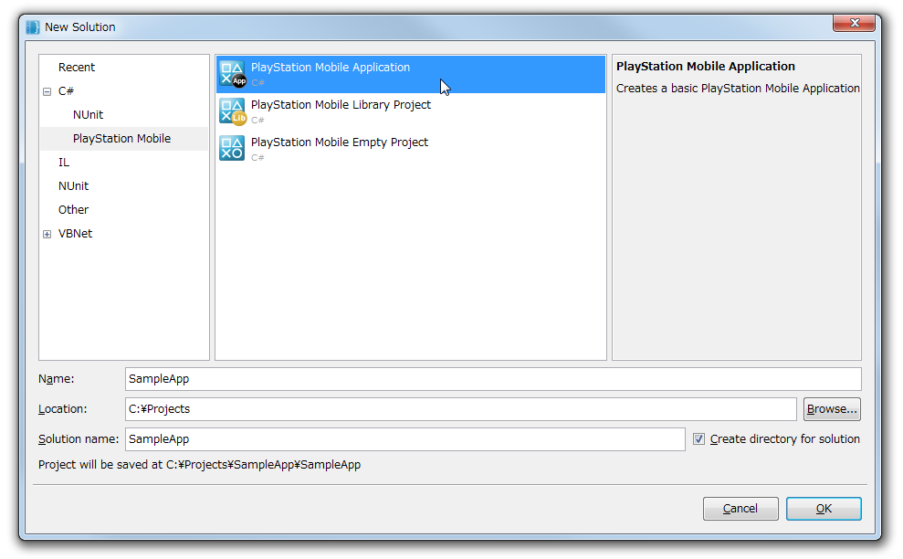
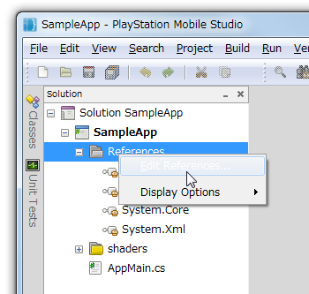
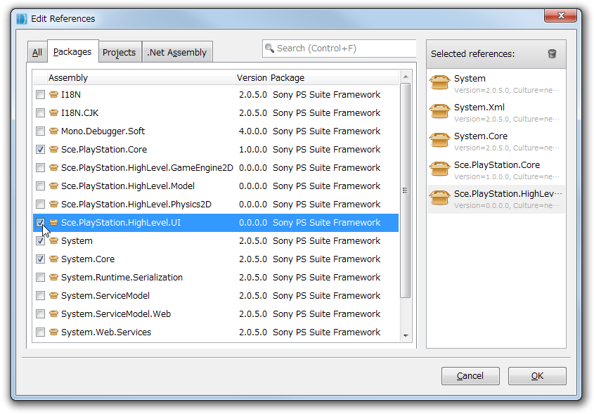

This section explains the easiest way to create an application using the UI Toolkit and how to check its operation.
Application development requires the use of PSM Studio, which is packaged together with the PSM SDK. Refer to Setup of the Development Environment in advance and set the development environment of PSM Studio.
PSM Studio, which is packaged together with the PSM SDK, provides project templates for creating a UI Toolkit application. Use this template to create a project.
Limitations
The template of the UI Toolkit application is currently being developed. Create a project of the UI Toolkit application in the following manner.
Start up PSM Studio.
From the PSM Studio main menu, select [File] > [New] > [Solution] (Figure 1).

Figure 1 Creation of a New Solution
From the [New Solution] dialog, select [C#] - [PlayStation Mobile] - [PlayStation Application]; enter an appropriate project name; and select [OK], to create a solution of the new PSM application (Figure 2).
Figure 2 New Solution Creation Dialog
Next, add the assemblies to reference. Right-click on [References] of the PSM Studio solution panel and select [Edit References...] (Figure 3).
Figure 3 Addition of Assemblies to Reference
From the [Edit References] dialog, select the [Packages] tab and check the [Sce.PlayStation.Highlevel.UI] check box (Figure 4).
Figure 4 Solution Configuration after Assembly Addition
Open AppMain.cs and overwrite with the following code.
- This is the minimum code required to use the UI Toolkit.
- Customize this code and use as appropriate.
using System; using System.Collections.Generic; using Sce.PlayStation.Core; using Sce.PlayStation.Core.Environment; using Sce.PlayStation.Core.Graphics; using Sce.PlayStation.Core.Input; using Sce.PlayStation.HighLevel.UI; namespace UIToolkitApp { public class AppMain { private static GraphicsContext graphics; public static void Main (string[] args) { Initialize (); while (true) { SystemEvents.CheckEvents (); Update (); Render (); } } public static void Initialize () { // Set up the graphics system graphics = new GraphicsContext (); // Initialize UI Toolkit UISystem.Initialize(graphics); // TODO: Create scenes and call UISystem.SetScene // Scene myScene = new Sce.PlayStation.HighLevel.UI.Scene(); // UISystem.SetScene(myScene, null); } public static void Update () { // Query gamepad for current state var gamePadData = GamePad.GetData (0); // Query touch for current state List<TouchData> touchDataList = Touch.GetData (0); // Update UI Toolkit UISystem.Update(touchDataList); } public static void Render () { // Clear the screen graphics.SetClearColor (0.0f, 0.0f, 0.0f, 0.0f); graphics.Clear (); // Render UI Toolkit UISystem.Render (); // Present the screen graphics.SwapBuffers (); } } }
Create a scene in which a widget (for displaying text) is positioned, and set this scene to the UI Toolkit.
Open AppMain.cs. The following comment will be written at the beginning of the main method.
// TODO: Create scenes and call UISystem.SetScene // Scene myScene = new Sce.PlayStation.HighLevel.UI.Scene(); // UISystem.SetScene(myScene, null);Rewrite this comment section as follows.
// Create scene Scene scene = new Sce.PlayStation.HighLevel.UI.Scene(); Label label = new Label(); label.X = 10.0f; label.Y = 50.0f; label.Text = "Hello World!"; scene.RootWidget.AddChildLast(label); // Set scene UISystem.SetScene(scene, null);The overall code of AppMain.cs will be as follows.
using System; using System.Collections.Generic; using Sce.PlayStation.Core; using Sce.PlayStation.Core.Environment; using Sce.PlayStation.Core.Graphics; using Sce.PlayStation.Core.Input; using Sce.PlayStation.HighLevel.UI; namespace UIToolkitApp { public class AppMain { private static GraphicsContext graphics; public static void Main (string[] args) { Initialize (); while (true) { SystemEvents.CheckEvents (); Update (); Render (); } } public static void Initialize () { // Set up the graphics system graphics = new GraphicsContext (); // Initialize UI Toolkit UISystem.Initialize(graphics); // Create scene Scene scene = new Sce.PlayStation.HighLevel.UI.Scene(); Label label = new Label(); label.X = 10.0f; label.Y = 50.0f; label.Text = "Hello World!"; scene.RootWidget.AddChildLast(label); // Set scene UISystem.SetScene(scene, null); } public static void Update () { // Query gamepad for current state var gamePadData = GamePad.GetData (0); // Query touch for current state List<TouchData> touchDataList = Touch.GetData (0); // Update UI Toolkit UISystem.Update(touchDataList); } public static void Render () { // Clear the screen graphics.SetClearColor (0.0f, 0.0f, 0.0f, 0.0f); graphics.Clear (); // Render UI Toolkit UISystem.Render (); // Present the screen graphics.SwapBuffers (); } } }
Execute the created code on a PC simulator.
The execution procedure is the same as that for Setup of the Development Environment. Follow the procedure below to execute or debug-execute.
From the main menu of PSM Studio, select [Build] > [Build All] to build the application. Check that there is no error displayed in the status bar at the lower right.
Confirm that the target is [PlayStation Mobile Simulator] for [Project] > [PSM Device Target] in the PSM Studio main menu.
When [Run] > [Run] or [Debug] is selected from the PSM Studio main menu, execution or debugging with the simulator is possible (Figure 5).

Figure 5 Execution on the Simulator